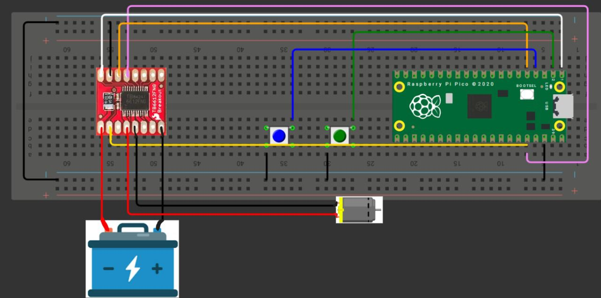

Modulación por ancho de pulso - PWM
1) Resumen
- Nombre del proyecto: Modulación por ancho de pulso - PWM
- Equipo: Carlos Ernesto Camacho Gonzalez y David López Ramírez
- Curso: Sistemas Embebidos I
- Fecha: 30/09/2025
- Descripción breve: Estas prácticas muestran aplicaciones prácticas de la generación de frecuencias: control de velocidad de un motor mediante el PWM, generación de notas con un buzzer variando la frecuencia, y síntesis de una señal senoidal de 60 Hz mediante PWM más un filtro RC.
2) Objetivos
- General: Aplicar la modulación por ancho de pulso (PWM) en diferentes contextos de control y generación de señales, integrando componentes electrónicos y de programación.
- Específicos:
- Implementar circuitos y programas que regulen velocidad de motores DC y generen tonos musicales con un buzzer mediante variación de duty cycle y frecuencia.
3) Requisitos
Software - Visual Studio Code (Lenguaje de programación C)
Hardware - Raspberry Pi Pico 2 RP2350
Conocimientos previos - Programación básica en C - Electrónica básica
4) Desarrollo
1) Control de Duty Cycle — Motor DC
Función
Se configura un pin PWM para controlar un motor DC y utiliza dos botones para cambiar entre tres valores de duty cycle (baja, media y alta velocidad). Con cada pulsación se actualiza la velocidad seleccionada.
Código
#include "pico/stdlib.h"
#include "hardware/pwm.h"
// PWM
#define MOTOR_PWM_PIN 0
// Botón para subir velocidad
#define BTN_UP 1
// Botón para bajar velocidad
#define BTN_DOWN 2
// Dirección del motor
#define MOTOR_DIR_PIN 3
//Configuración de PWM
#define F_PWM_HZ 2000 // 2 kHz
#define TOP 1023 // 10 bits de resolución (0-1023)
int main() {
stdio_init_all();
// Habilitar la función PWM
gpio_set_function(MOTOR_PWM_PIN, GPIO_FUNC_PWM);
gpio_init(MOTOR_DIR_PIN);
gpio_set_dir(MOTOR_DIR_PIN, GPIO_OUT);
gpio_put(MOTOR_DIR_PIN, 1);
gpio_init(BTN_UP);
gpio_set_dir(BTN_UP, GPIO_IN);
gpio_pull_up(BTN_UP);
gpio_init(BTN_DOWN);
gpio_set_dir(BTN_DOWN, GPIO_IN);
gpio_pull_up(BTN_DOWN);
// Configuración de hardware PWM
uint slice = pwm_gpio_to_slice_num(MOTOR_PWM_PIN);
uint chan = pwm_gpio_to_channel(MOTOR_PWM_PIN);
// Calcular divisor de reloj para la frecuencia deseada
float f_clk = 125000000.0f; // Reloj del sistema es 125 MHz
float div = f_clk / (F_PWM_HZ * (TOP + 1));
pwm_set_clkdiv(slice, div);
// Establecer el valor máximo del contador O SEA resolucion
pwm_set_wrap(slice, TOP);
// Iniciar PWM con el motor apagado
pwm_set_chan_level(slice, chan, 0);
pwm_set_enabled(slice, true);
int speed_level = 0;
// Duty cycles
const uint16_t duty_levels[] = {0, 307, 665, 972};
while (true) {
if (!gpio_get(BTN_UP)) {
if (speed_level < 3) {
speed_level++;
}
pwm_set_chan_level(slice, chan, duty_levels[speed_level]);
sleep_ms(200);
}
if (!gpio_get(BTN_DOWN)) {
if (speed_level > 0) {
speed_level--;
}
pwm_set_chan_level(slice, chan, duty_levels[speed_level]);
sleep_ms(200);
}
}
}
Esquemático de conexión

Vídeo
2) Control de Frecuencia — Canción con Buzzer
Función
Genera una melodía en un buzzer variando la frecuencia del PWM mientras mantiene un duty fijo de 50 %. Para ello recorre una tabla de notas con frecuencias y duraciones, reproduciendo cada una con pausas definidas para hacer la melodía clara.
#include "pico/stdlib.h"
#include "hardware/pwm.h"
#define BUZZER_PIN 0
#define TOP 1023 // Resolución
#define TEMPO 190 // Tempo muy rápido
//Duraciones de Nota
#define NEGRA (60000 / TEMPO)
#define CORCHEA (NEGRA / 2)
#define SEMICORCHEA (NEGRA / 4)
int main() {
stdio_init_all();
gpio_set_function(BUZZER_PIN, GPIO_FUNC_PWM);
uint slice = pwm_gpio_to_slice_num(BUZZER_PIN);
uint chan = pwm_gpio_to_channel(BUZZER_PIN);
pwm_set_wrap(slice, TOP);
pwm_set_chan_level(slice, chan, 0); // Empezar en silencio
pwm_set_enabled(slice, true);
// Pac-Man
const float frecuencias[] = {
//Intro Original
987.77, 1479.98, 1244.51, 987.77, 1479.98, 1244.51, 0,
1046.50, 1567.98, 1318.51, 1046.50, 1567.98, 1318.51, 0,
987.77, 880.00, 783.99, 698.46, 622.25, 587.33, 0,
//Intermisión
783.99, 0, 880.00, 0, 987.77, 0, 783.99,
987.77, 0, 1046.50, 0, 1174.66, 0, 987.77,
1174.66, 0, 1244.51, 0, 1318.51, 0, 1174.66
};
const int duraciones[] = {
// Duraciones Intro
CORCHEA, CORCHEA, CORCHEA, CORCHEA, CORCHEA, CORCHEA, CORCHEA,
CORCHEA, CORCHEA, CORCHEA, CORCHEA, CORCHEA, CORCHEA, CORCHEA,
SEMICORCHEA, SEMICORCHEA, SEMICORCHEA, SEMICORCHEA, SEMICORCHEA, NEGRA, NEGRA,
// Duraciones Intermisión
CORCHEA, SEMICORCHEA, CORCHEA, SEMICORCHEA, CORCHEA, SEMICORCHEA, NEGRA,
CORCHEA, SEMICORCHEA, CORCHEA, SEMICORCHEA, CORCHEA, SEMICORCHEA, NEGRA,
CORCHEA, SEMICORCHEA, CORCHEA, SEMICORCHEA, CORCHEA, SEMICORCHEA, NEGRA
};
int num_notas = sizeof(frecuencias) / sizeof(frecuencias[0]);
while(true) {
// Tocar la melodía completa
for (int i = 0; i < num_notas; i++) {
if (frecuencias[i] > 0) {
float f_clk = 125000000.0f;
float div = f_clk / (frecuencias[i] * (TOP + 1));
pwm_set_clkdiv(slice, div);
pwm_set_chan_level(slice, chan, TOP / 2);
} else {
pwm_set_chan_level(slice, chan, 0);
}
sleep_ms(duraciones[i]);
}
pwm_set_chan_level(slice, chan, 0);
sleep_ms(2000); // Pausa de 2 segundos
}
}
Esquemático de conexión
Vídeo
3) Generación de Señales — Senoidal de 60 Hz con PWM + Filtro RC
Función
Produce una señal senoidal aproximada de 60 Hz modulando el duty cycle del PWM de acuerdo con una función seno, donde la salida se pasa por un filtro RC. Comparando la señal generada antes y después de la aplicación del filtro RC con ayuda de un osciloscopio.
#include <stdio.h>
#include <math.h>
#include "pico/stdlib.h"
#include "hardware/pwm.h"
#define SENAL 0 // Pin GPIO de salida
#define TOP 1023 // Resolución del PWM (10 bits)
#define FREQ 60 // Frecuencia de la señal senoidal deseada (Hz)
#define TAMANO_SENO 100 // Número de puntos de la tabla seno
// Tabla seno (se llenará en tiempo de ejecución)
uint16_t TABLA_SENO[TAMANO_SENO];
int main() {
stdio_init_all();
// Llenar tabla seno con VALores escalados a [0, TOP]
for (uint8_t i = 0; i < TAMANO_SENO; i++) {
double RAD = (2 * M_PI * i) / TAMANO_SENO;
double VAL = (sin(RAD) + 1.0) / 2.0;
TABLA_SENO[i] = (uint16_t)(VAL * TOP);
}
// Configurar pin PWM
gpio_set_function(SENAL, GPIO_FUNC_PWM);
uint slice = pwm_gpio_to_slice_num(SENAL);
uint chan = pwm_gpio_to_channel(SENAL);
pwm_set_wrap(slice, TOP);
pwm_set_chan_level(slice, chan, 0);
pwm_set_enabled(slice, true);
// Calcular la frecuencia de actualización de la LUT
// Se necesita actualizar TAMANO_SENO veces por cada ciclo de 60 Hz
double RATE = FREQ * TAMANO_SENO; // Hz
uint32_t delay_us = 1000000.0 / RATE;
int INDEX = 0;
while (true) {
pwm_set_chan_level(slice, chan, TABLA_SENO[INDEX]);
INDEX++;
if (INDEX >= TAMANO_SENO) INDEX = 0;
sleep_us(delay_us); // Espera para ajustar la frecuencia
}
}